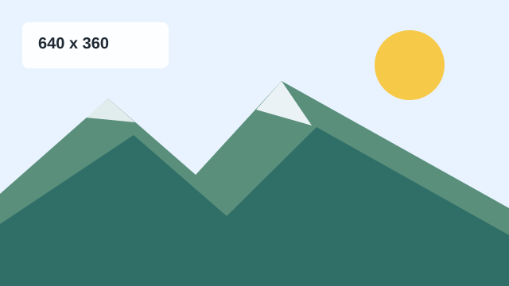

原始比例

<img src="../assets/images/photo-landscape.svg"
alt="山景示意圖原始比例"
width="320">Demo 03
同一張 640 x 360 的圖片，用不同尺寸寫法顯示。觀察只設定寬度、 同時設定錯誤寬高，以及 CSS 響應式圖片的差異。

<img src="../assets/images/photo-landscape.svg"
alt="山景示意圖原始比例"
width="320">高度會依照原始比例縮放。
原本寬版圖片被強制壓成正方形。
.responsive-image {
max-width: 100%;
height: auto;
}| 寫法 | 結果 | 適合程度 |
|---|---|---|
只設定 width |
高度依比例縮放 | 常見且安全 |
只設定 height |
寬度依比例縮放 | 可用，但較少見 |
| 同時設定錯誤比例 | 圖片可能變形 | 應避免 |
CSS max-width: 100%; height: auto; |
圖片可隨容器縮放並維持比例 | 適合響應式頁面 |